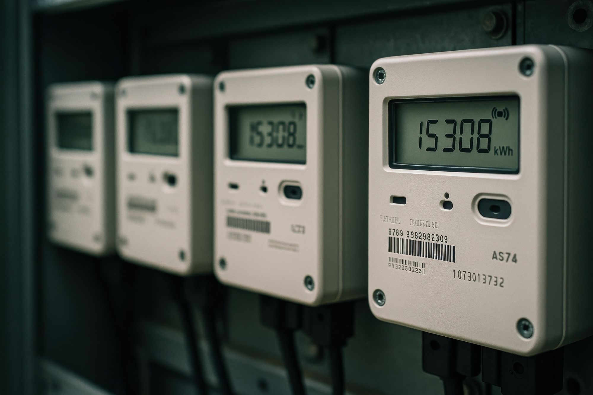

Zonnepanelen, batterijopslag, laadpalen en gebouwinstallaties leveren pas écht rendement op wanneer ze slim samenwerken. Het Vibe EMS stemt alle onderdelen automatisch op elkaar af — zo verlaagt u energiekosten, voorkomt u piekbelasting en benut u uw aansluiting optimaal.
U koopt zonnepanelen bij de één, opslag bij de ander en laadpalen bij een derde. Zonder regie werken die systemen langs elkaar heen: energie gaat verloren, pieken lopen op en u mist het overzicht.
Eigen opwek gaat terug het net op tegen een lage prijs, in plaats van benut te worden in uw eigen pand.
Eigen verbruik blijft laagZonder sturing laadt en ontlaadt de batterij op de verkeerde momenten — de besparing blijft liggen.
Waarde onbenutLaden concurreert met het gebouw en stapelt pieken op uw aansluiting — duur en risicovol.
PiekoverschrijdingAlle onderdelen stemmen zichzelf af, energie wordt slim verdeeld, verbruik wordt gestuurd en uw kosten dalen. Daarvoor is één centraal brein nodig: een Energy Management System. Geen dashboard met knipperlichten, maar een besturingssysteem dat elke seconde één optimale keuze maakt — produceren, opslaan, leveren of beperken — en van losse onderdelen één systeem maakt.
— Eén systeem. Eén regie.
Het EMS verbindt accu, zon, laden en klimaat tot één lokale energiecentrale en stuurt elk domein automatisch. Tik op een domein om te zien wat het oplevert.
Het EMS stuurt klimaat op aanwezigheid en buitentemperatuur — zonder handmatige bediening.
Adaptieve verlichting op bezettingssensoren — zones schakelen automatisch, dag en nacht.
Laadvermogen wordt realtime verdeeld over de beschikbare capaciteit — pieken gespreid, niet opgeteld.
Zonder melding. Piek afgevlakt, capaciteitstarief vermeden. Het systeem denkt twee stappen vooruit.
Vermogenpiek geknipt door peak-shaving met accu en sturing van laadpalen en proceslast.
N=12 locaties · 2024Sturen op spotprijs, imbalans en eigen verbruik — lager tarief, hogere benutting eigen productie.
benchmark · industrieMeer eigen solar in eigen pand of laadinfra benut, minder terugleveren tegen lage prijs.
PV + accu + EMSSetpoint-update per seconde naar elk component — snel genoeg om de piek te knippen voor de meter.
closed loop · per componentEen quickscan op uw locatie laat zien wat het EMS uit uw opstelling haalt.
Stel uw vraagWij analyseren uw huidige energiesysteem en laten zien waar slimme sturing direct voordeel oplevert.